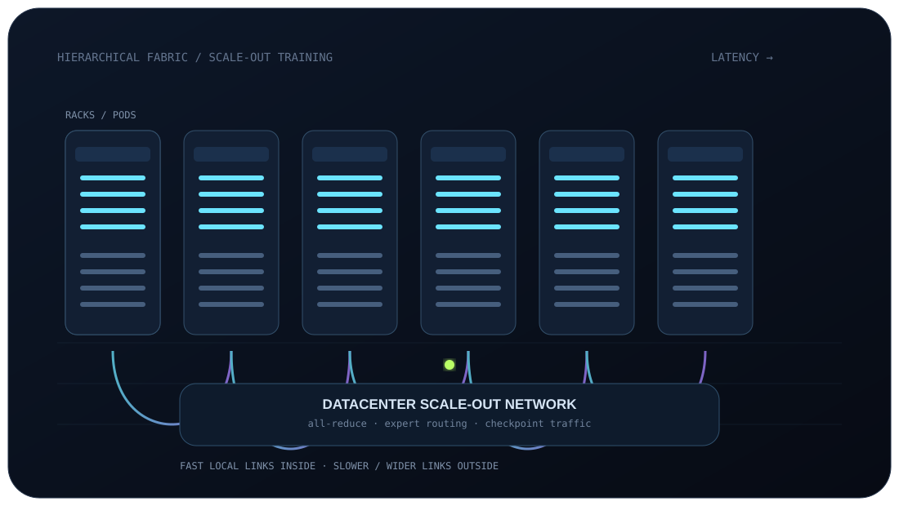
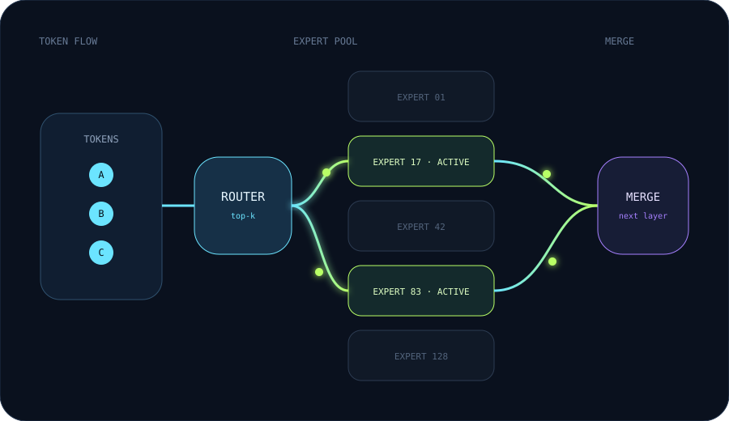

DENSEMETA · 2024
Llama 3.1 405B
30.84MH100 GPU-hours
Architecture405B dense
Training tokens~15T
Published TDP basis700 W / H100
Primary source ↗
Because efficiency changes what becomes economically possible. MoE, lower precision, better kernels and faster interconnects reduce cost per unit of intelligence — and frontier labs reinvest the savings into larger workloads, more modalities, longer contexts, more experiments and shorter iteration cycles.
MoE attacks one term in the compute equation: how many parameters participate in each token. The saved compute can be spent elsewhere.
Fewer parameters active per token.
Compute / token ↓Text, code, images, audio and video.
Tokens processed ↑More state and attention work per example.
Memory + comms ↑RL, synthetic traces and inference-time search.
System compute ↑At frontier scale, the network becomes part of the computer. MoE can reduce arithmetic while increasing the importance of all-to-all expert routing, memory bandwidth and topology.

These are public, model-specific disclosures — not estimates of total company R&D spend.
GPU-hour comparisons are useful but not perfectly apples-to-apples: H100 and H800 differ, software stacks differ, and “full training” boundaries vary by disclosure.
The harder engineering problem is connecting enough accelerators with adequate bandwidth, latency, memory locality, power and cooling to keep them productive on one workload.
Google says JAX + Pathways can distribute training across multiple sites and scale a single training system across more than one million TPUs globally.
A sparse MoE model stores many experts but activates only a subset for each token. That can slash matrix-multiply work while increasing pressure on memory placement and interconnect traffic.

Move the controls. The simulator estimates parameter storage, dense-equivalent training FLOPs, GPU-hours, wall-clock duration, electricity and accelerator rental. These are planning approximations, not quotes.
A frontier program is a loop: hypothesize → train → evaluate → change data/model → train again. Compressing a run from months to weeks can multiply the number of serious research cycles per year.
Efficiency improves intelligence per unit compute. Concentration determines how much compute can be applied inside a useful wall-clock window. Frontier labs pursue both.
Primary sources are linked directly. Company infrastructure claims are presented as claims from those organizations, not independently audited fleet inventories.